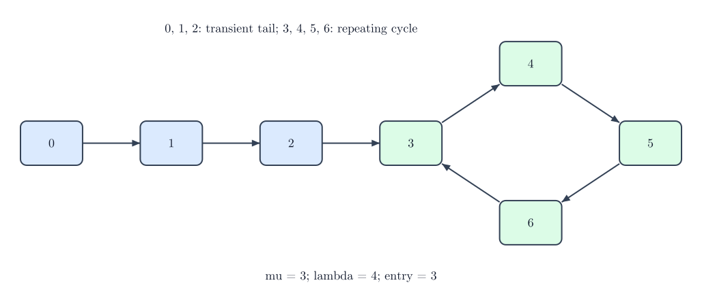
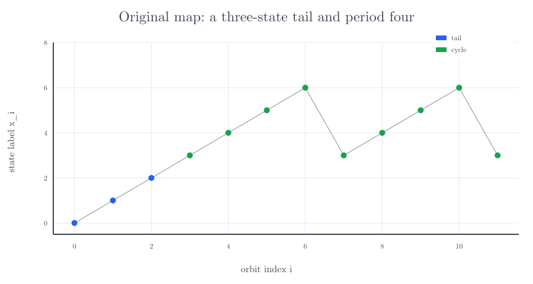
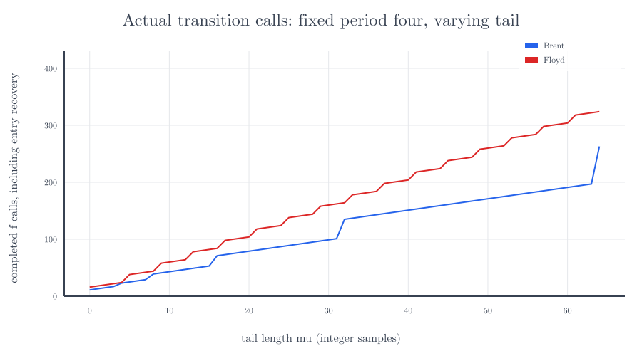

Brent Cycle Detection: Doubling Blocks, Period and Entry
Abstract
A deterministic finite-state iteration eventually has a transient tail followed by a cycle. Brent's method finds their lengths using constant auxiliary storage. We begin with the original seven-state map, inspect checkpoints recorded by the same loop as ordinary detection, and recover the actual cycle entry. A decimal digit-square application retains the original happy-number examples. Controlled tails then test exact transition-call formulas for Brent and Floyd. All maps, orbit prefixes, diagnostic records and digit operations come from native C++.
A seven-state map: three transient states and a four-cycle
Start at zero and follow 0→1→2→3→4→5→6→3. The first three states are transient; the remaining four repeat. Thus the least entry index is mu=3, the least positive period is lambda=4, and the entry state is three. The native rho-map generator recreates the original successor table exactly. Blue nodes precede entry; green nodes lie on the cycle.
#include <dm/dm.hpp>
int main() {
std::filesystem::create_directories("build");
const auto next=dm::algorithms::rho_successors(3,4);
const dm::algorithms::CycleFunction f=[&](std::uint64_t x){return next.at(x);};
const auto work=dm::algorithms::brent_cycle_work(0,f);
const auto states=dm::algorithms::iterate_states(0,f,next.size());
const std::vector<dm::graphics::DiagramPoint> position{{0,0},{2.7,0},{5.4,0},{8.1,0},{10.8,1.8},{13.5,0},{10.8,-1.8}};
dm::graphics::Diagram diagram(65,1100);
for (std::size_t i=0;i<states.size();++i) {
dm::graphics::DiagramNodeStyle style;style.width=1.4;style.height=1;
style.fill=i<work.result.mu?dm::RGB{219,234,254}:dm::RGB{220,252,231};
diagram.node(std::format("s{}",states[i]),position[i],std::format("{}",states[i]),style);
}
for (std::size_t state=0;state<next.size();++state)
diagram.edge(std::format("s{}",state),std::format("s{}",next[state]));
diagram.text({5.4,2.6},"0, 1, 2: transient tail; 3, 4, 5, 6: repeating cycle")
.text({6.75,-3},std::format("mu = {}; lambda = {}; entry = {}",work.result.mu,work.result.lambda,work.entry))
.save_svg("build/brent_functional_graph.svg");
std::print("Successor table: {}.\n\nNative result: mu={}, lambda={}, entry={}.\n",
next,work.result.mu,work.result.lambda,work.entry);
}Successor table: [1, 2, 3, 4, 5, 6, 3].
Native result: mu=3, lambda=4, entry=3.

What doubles, and where the reference actually sits
Write \(x_i=f^i(x_0)\). A finite deterministic map has least integers mu≥0 and lambda≥1 such that \(x_{i+\lambda}=x_i\) for every i≥mu. Before mu the states are distinct and never recur. On the cycle, equal states have indices congruent modulo lambda.
Brent fixes a reference and advances one runner. The block length P takes values 1,2,4,8,…; the reference indices are P−1, hence 0,1,3,7,… . When a block is exhausted without equality, copy the runner to the reference, double P and clear the block offset. That copy calls no transition function. Advance the runner before testing equality again: equality immediately after a copy is not evidence of a completed cycle.
A block can succeed exactly when its reference is on the cycle and its length is at least lambda. Its first successful runner offset is lambda. Consequently, if P is the smallest power of two satisfying
period discovery makes exactly P−1+lambda calls. For the original map, P=4, the successful reference is x_3, and the runner returns there at x_7. The recorded table includes both no-call checkpoints and actual movements.
#include <dm/dm.hpp>
int main() {
std::filesystem::create_directories("build");
const auto next=dm::algorithms::rho_successors(3,4);
const dm::algorithms::CycleFunction f=[&](std::uint64_t x){return next.at(x);};
const auto trace=dm::algorithms::brent_cycle_trace(0,f);
std::print("| event | reference index | runner index | reference state | runner state | P | offset | completed calls |\n"
"| :--- | ---: | ---: | ---: | ---: | ---: | ---: | ---: |\n");
for (const auto& row:trace.steps) if (row.phase==dm::algorithms::CyclePhase::detect)
std::print("| {} | {} | {} | {} | {} | {} | {} | {} |\n",row.checkpoint?"copy + double":"advance",
row.reference_index,row.runner_index,row.reference,row.runner,row.power,row.offset,row.evaluations);
std::print("\n| detector | discovery | gap alignment | entry location | period measurement | total calls | equality tests |\n"
"| :--- | ---: | ---: | ---: | ---: | ---: | ---: |\n");
const auto floyd=dm::algorithms::floyd_cycle_work(0,f);
for (const auto& [name,work]:std::vector<std::pair<std::string,dm::algorithms::CycleWork>>{{"Brent",trace.work},{"Floyd",floyd}})
std::print("| {} | {} | {} | {} | {} | {} | {} |\n",name,work.detection_evaluations,
work.alignment_evaluations,work.entry_evaluations,work.period_evaluations,work.evaluations,work.comparisons);
const auto orbit=dm::algorithms::iterate_states(0,f,12);
std::vector<double> index,state,tail_index,tail_state,cycle_index,cycle_state;
for (std::size_t i=0;i<orbit.size();++i) {
index.push_back(i);state.push_back(orbit[i]);
if (i<trace.work.result.mu) {tail_index.push_back(i);tail_state.push_back(orbit[i]);}
else {cycle_index.push_back(i);cycle_state.push_back(orbit[i]);}
}
dm::graphics::RPlot::create().lines(index,state,"",dm::RGB{156,163,175},1.3)
.points(tail_index,tail_state,"tail",dm::RGB{37,99,235},5)
.points(cycle_index,cycle_state,"cycle",dm::RGB{22,163,74},5)
.title("Original map: a three-state tail and period four")
.x_label("orbit index i").y_label("state label x_i").y_limits(-.5,8)
.size(900,480).save_svg("build/brent_rho.svg");
std::print("\nFirst twelve states: {}.\n",orbit);
}| event | reference index | runner index | reference state | runner state | P | offset | completed calls |
|---|---|---|---|---|---|---|---|
| advance | 0 | 1 | 0 | 1 | 1 | 1 | 1 |
| copy + double | 1 | 1 | 1 | 1 | 2 | 0 | 1 |
| advance | 1 | 2 | 1 | 2 | 2 | 1 | 2 |
| advance | 1 | 3 | 1 | 3 | 2 | 2 | 3 |
| copy + double | 3 | 3 | 3 | 3 | 4 | 0 | 3 |
| advance | 3 | 4 | 3 | 4 | 4 | 1 | 4 |
| advance | 3 | 5 | 3 | 5 | 4 | 2 | 5 |
| advance | 3 | 6 | 3 | 6 | 4 | 3 | 6 |
| advance | 3 | 7 | 3 | 3 | 4 | 4 | 7 |
| detector | discovery | gap alignment | entry location | period measurement | total calls | equality tests |
|---|---|---|---|---|---|---|
| Brent | 7 | 4 | 6 | 0 | 17 | 11 |
| Floyd | 12 | 0 | 6 | 4 | 22 | 12 |
First twelve states: [0, 1, 2, 3, 4, 5, 6, 3, 4, 5, 6, 3].

After discovering lambda, reset both pointers to x_0, advance the front pointer lambda times, and then advance both together. The rear pointer first agrees with the front at index mu: before then it is transient, and from mu onwards the two indices differ by one full period. Alignment therefore costs lambda calls and entry location costs 2mu calls. No additional pass is required to return the entry state. The total is
Because P is less than twice max(mu+1,lambda), this is O(mu+lambda) transition work. Ordinary detection and the work-summary API use O(1) auxiliary storage. Recording the chronological states or materialising an orbit prefix requires storage proportional to the number of retained records instead.
Decimal digit squares: retain the original happy-number examples
For decimal digits \(d_j\), let \(f(n)=\sum_j d_j^2\). Positive n is happy when this iteration reaches one; one then remains fixed. The native digit helper and native classifier replace the original report-side implementation. The reported entry comes directly from cycle recovery, without mu extra calls. The classifier performs its own constant-storage detection; its calls are separate from the displayed work summary.
#include <dm/dm.hpp>
int main() {
std::print("| input | first digit-square sum | mu | lambda | cycle entry | happy | Brent calls |\n"
"| ---: | ---: | ---: | ---: | ---: | :--- | ---: |\n");
for (std::uint64_t n:{7,19,23,4,116,999,0,1}) {
const auto work=dm::algorithms::brent_cycle_work(n,dm::algorithms::sum_squared_decimal_digits);
std::print("| {} | {} | {} | {} | {} | {} | {} |\n",n,dm::algorithms::sum_squared_decimal_digits(n),
work.result.mu,work.result.lambda,work.entry,dm::algorithms::is_happy_number(n),work.evaluations);
}
std::print("\nCycle starting at four: {}.\n",
dm::algorithms::iterate_states(4,dm::algorithms::sum_squared_decimal_digits,9));
}| input | first digit-square sum | mu | lambda | cycle entry | happy | Brent calls |
|---|---|---|---|---|---|---|
| 7 | 49 | 5 | 1 | 1 | true | 19 |
| 19 | 82 | 4 | 1 | 1 | true | 17 |
| 23 | 13 | 3 | 1 | 1 | true | 11 |
| 4 | 16 | 0 | 8 | 4 | false | 23 |
| 116 | 38 | 3 | 8 | 58 | false | 29 |
| 999 | 243 | 4 | 8 | 89 | false | 31 |
| 0 | 0 | 0 | 1 | 0 | false | 2 |
| 1 | 1 | 0 | 1 | 1 | true | 2 |
Cycle starting at four: [4, 16, 37, 58, 89, 145, 42, 20, 4].
Every uint64 value has at most twenty decimal digits, so its first digit-square sum is at most 20*81=1620. A positive value maps to a positive value. Enumerating the maps from all positive inputs 1..1620 with an independent first-seen-state oracle in the native tests verifies only two eventual cycles: the fixed point one and the eight-cycle 4→16→37→58→89→145→42→20→4. Combined with the first-step bound, this covers every positive uint64 input. Zero has its own fixed point and is not happy. [OEIS A007770](https://oeis.org/A007770) records the decimal happy-number definition and sequence.
Controlled tails: exact counts against Floyd
Use generated rho maps with lambda=4 and mu=0..64. For the preserved Floyd variant, let t be the first positive multiple of lambda at least mu:
Each meeting-search round contributes three calls, including the initial round's repeated f(x_0). Entry recovery contributes 2mu and period measurement lambda. The programme checks both total-count formulas at every plotted integer mu; the table selects values around block boundaries. These are logical calls over all phases, without wall-clock timing or a random-map average. The large jumps in Brent's curve occur when mu reaches a power of two and the successful reference must move to the next block.
#include <dm/dm.hpp>
int main() {
std::filesystem::create_directories("build");
const std::size_t lambda=4;
std::vector<double> tail,brent,floyd;
std::print("| mu | successful P | Brent discovery | Brent total | Floyd total |\n"
"| ---: | ---: | ---: | ---: | ---: |\n");
for (std::size_t mu=0;mu<=64;++mu) {
const auto next=dm::algorithms::rho_successors(mu,lambda);
const dm::algorithms::CycleFunction f=[&](std::uint64_t x){return next.at(x);};
const auto b=dm::algorithms::brent_cycle_work(0,f);
const auto ff=dm::algorithms::floyd_cycle_work(0,f);
const auto power=std::bit_ceil(std::max(mu+1,lambda));
const auto t=lambda*std::max(std::size_t{1},(mu+lambda-1)/lambda);
if (b.evaluations!=power-1+2*lambda+2*mu || ff.evaluations!=3*t+2*mu+lambda) return 1;
tail.push_back(mu);brent.push_back(b.evaluations);floyd.push_back(ff.evaluations);
if (mu<=4 || std::has_single_bit(mu) || std::has_single_bit(mu+1))
std::print("| {} | {} | {} | {} | {} |\n",mu,power,b.detection_evaluations,b.evaluations,ff.evaluations);
}
dm::graphics::RPlot::create().lines(tail,brent,"Brent",dm::RGB{37,99,235},2)
.lines(tail,floyd,"Floyd",dm::RGB{220,38,38},2)
.title("Actual transition calls: fixed period four, varying tail")
.x_label("tail length mu (integer samples)").y_label("completed f calls, including entry recovery")
.y_limits(0,430).size(900,500).save_svg("build/brent_evaluations.svg");
std::print("\nAll 65 generated maps match both exact count formulas.\n");
try {
dm::algorithms::brent_cycle_work(0,[](std::uint64_t x){return x+1;},{20});
return 1;
} catch (const std::runtime_error&) {
std::print("A separate increasing-orbit demonstration stops at its 20-call budget.\n");
}
}| mu | successful P | Brent discovery | Brent total | Floyd total |
|---|---|---|---|---|
| 0 | 4 | 7 | 11 | 16 |
| 1 | 4 | 7 | 13 | 18 |
| 2 | 4 | 7 | 15 | 20 |
| 3 | 4 | 7 | 17 | 22 |
| 4 | 8 | 11 | 23 | 24 |
| 7 | 8 | 11 | 29 | 42 |
| 8 | 16 | 19 | 39 | 44 |
| 15 | 16 | 19 | 53 | 82 |
| 16 | 32 | 35 | 71 | 84 |
| 31 | 32 | 35 | 101 | 162 |
| 32 | 64 | 67 | 135 | 164 |
| 63 | 64 | 67 | 197 | 322 |
| 64 | 128 | 131 | 263 | 324 |
All 65 generated maps match both exact count formulas. A separate increasing-orbit demonstration stops at its 20-call budget.

The transition must be deterministic and callable for every encountered state. The detector borrows the callback during its call; completed callback effects are not undone when an exception propagates. Legacy two-argument detectors remain available with their existing CycleResult layout. Diagnostic entry points additionally accept an optional global completed-call budget. Zero means unlimited; a positive budget throws before the next call would exceed it, including during entry recovery. A call budget does not interrupt a callback that itself fails to return. Arithmetic counters are checked before wrap, and recording may also fail to allocate its owned vector.
References and reproducibility
R. P. Brent (1980), An improved Monte Carlo factorization algorithm, BIT 20, 176–184, [doi:10.1007/BF01933190](https://doi.org/10.1007/BF01933190). The [author's publication page](https://maths-people.anu.edu.au/~brent/pub/pub051.html) links the original paper. This report studies the deterministic doubling variant's actual counts, including recovery, rather than treating the paper's random-map average speedup as a measured result for these maps.
The inputs here are a fully specified seven-state graph, the original six positive digit-map examples plus two controls, and generated rho maps. No observational dataset or random seed is involved. The canonical cycle module also has exhaustive small-map oracle tests, controlled period/tail tests, callback-call-order checks, and limits tested in every phase. Each code block is a complete independently executable programme; SVG files are rendered into its local build directory and copied into figures by the report runner.